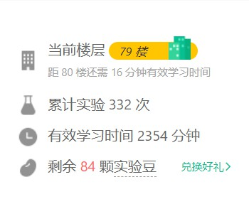

艰难的自学之路
引言
没有目标或者学习路径的自学难见成效，搞一搞规划，也算是过年的暂定 flag 吧。
经过一段时间 [{11.22-12.9}] 的预实验，我发现要给这些 flag 设定一些优先度， 并尝试将流程培养成潜意识，某段时间就去做某事， 不然会浪费一些时间在决定这时候干什么上，并可能在决定的过程中被其他事情吸引，注意力很容易被分散。
优先度
首当其冲 {{我知道不是这个意思，但这样用的人多了，没准以后就是了呢}} 肯定是自己的 健康，保护好自己的视力和皮肤，这就要 早睡早起，多喝热水，勤撒尿，减少用眼，听喜马拉雅是个不错的选择。
>>>1. 身体最重要!important 多喝热水，用化学术语说其实是个链反应。 小学二年级的知识告诉我们： 首先，人体各种生化反应是需要水， 作为反应的溶剂，水时刻影响着物质的浓度， 而热水的温度会影响化学反应的速率，以及 反应的程度，而热水既提供了反应的溶剂，也提供了一定的热量， 并且迫使个体撒尿，既避免久坐，又避免连续用眼。 要说这个 flag 的优先度，它其实是贯穿一整天的，没办法设置具体的时间段。
>>>2. 搞个项目API 3h/d 现在就很不懂后端怎么搞 API，在网上找的前端的课程，因为时间久远等原因， API基本就挂了， 在前后端API联调上不是很熟悉（好吧，就是不会）， 尝试一下还原 API， 不然，总感觉被东西牵制着，活动不开。
>>>3. 前端修炼 1h/d 前端基础：JavaScript && 算法
身体最重要!important
作为一个化学学士（自豪），没有选择从事自己的对口工作，有相当大原因就是怕化工厂发生安全事故，小命要紧。
我还想多活几年。我还想多活几年。我还想多活几年。
在大学期间学的化学生物学告诉我，人体是有一定的自我修复能力的。
偶尔的加班对身体造成的一定的损害，经过一段时间的调整，人体自我修复也是可以的 hold 住的。
但，一直这么搞，就是搞事情了。没有“一段时间”的修复，不断的积压，身体各种激素，酶紊乱。错过了，华佗也没得法子。
依据我自己的身体素质，给自己一些时间养成良好的习惯，提高身体的自我修复能力。还能活蹦乱跳的真是太好了。
- 1. 减少眼睛的使用，听广播是一个好习惯
- 2. 23点碎觉
- 3. 每天至少步行3000步/d 七尖，千八 | 提高自体防御体系的战斗力，即促进修复酶（Reparaturenzyme）和抗氧化剂（Antioxidanzien）的形成
- 4. 搞点爱好 围棋 ？摄影？
- 5. 多喝热水，因为自己体质的原因，水的温度要控制一下，首先凉水自己起码在冬天是无法承受的
- 6. 测一下皮肤的PH，这里就体现专业素养（装B），PH试纸，酸性可以抵御大部分的病毒
- 7. 多吃酸性物质，今天尝试吃醋？
盲打 10min/d
首先要解决盲打的问题，经过一段时间的尝试，现在有三个试炼场可供选择
Linux && MySql 30min/d
shiyanlou 2h/d 12.1 start
Linux 学习对于当时刚入门的自己是比较困难的，环境配置起来有点麻烦，搞台机子要花点小钱。
当时也是在实验楼的上面尝试 Linux 的，但当时没有规划，尝试规划完整地刷一下。
毕竟也是 coding 的一个必备技能。
实验楼 - 到此一游？曾经在上面参加了一个挑战，得了一些周边和会员，美滋滋。
目前在79楼，过年前刷到百楼？
计划有变，官方又出了一个活动： 「30 天百楼挑战」报名开启！1000 元学习大礼等你领取～
活动要点是：30天 100楼 50小时
嗯，评估一下难易度：
上一个活动 增长43层，其实就已经有点极限了，这次硬生生的增加了不止1倍的难度。 12月前停掉其他进程，把重点放在爬楼和前端特别是 JavaScript基础 上。
50h 就刷两个课程有点水了，重新评估挑选课程
主要暂定刷以下
两个
五个
3个
课程
前端修炼 1h/d
在 freecodecamp.cn 断断续续刷了一段时间，发现这个网站有国际版，为了国际化，转向国际版， 再加上发现的另一个站点，补一下前端的专业英语，我蹩脚的英语。 主要是看一下里面的算法题。
写一些笔记记录一下： JavaScript算法
搞个项目API 3h/d
参考教程是 前端晋升全栈工程师必备课程 Node.js 从零开发web server博客项目 一站式掌握 Node.js+Express+Koa2
不会搭建 API 心里总是有点虚，搞一个
基本的增删改查实现一下
my-blog-serverTypeScript
这玩意肯定是要学的，但不是紧急的，找个时间
职业规划
通往全栈的道路在哪里。。。